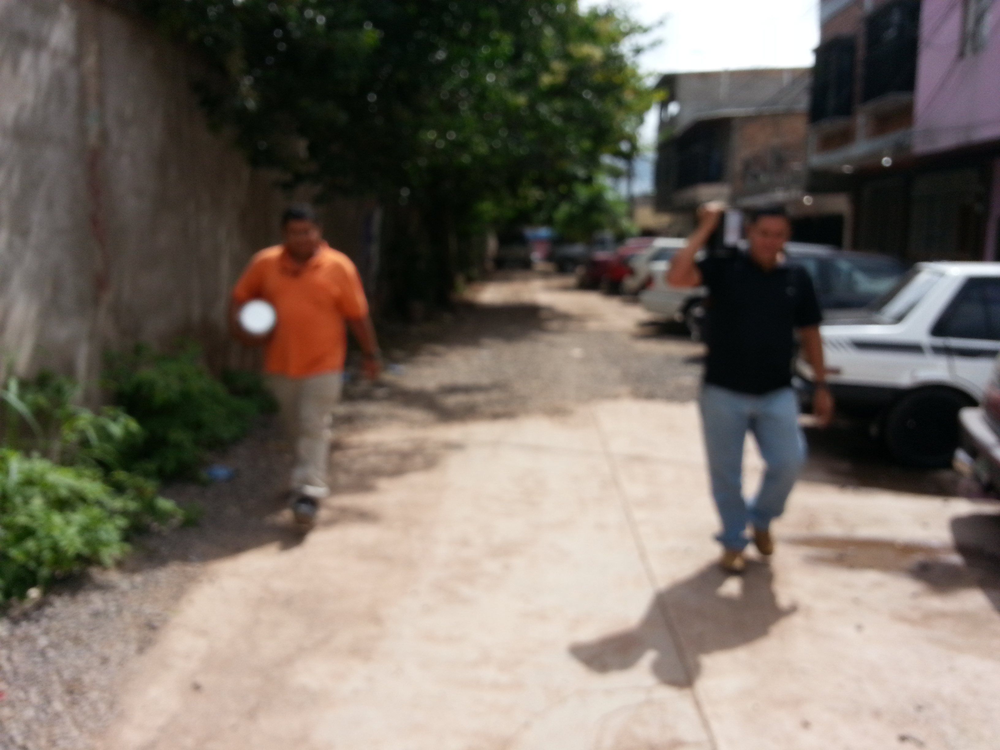

CHUPADEROS DEL JAGUILLO
DONDE SE PONE A PIJA ESTE MAJE
Enviar mail
SEMANA MORAZÁNICA, 2019
Cualquier consulta llameme al 00 (504) 3234-2679
E-mail "iriasam@yahoo.com" Alias Pocas Pulgas
¡¡Quien dijo miedo¡¡
